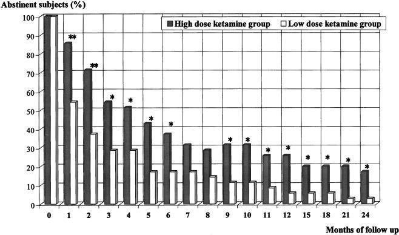

Drug addiction is a chronic, relapsing disorder of the brain characterized by compulsive drug seeking despite adverse consequences.[1] The causes are complex, but genetics, environment, and mental health status undeniably influence drug use and subsequent addiction.
In 2018, drug overdoses caused 20.7 deaths per 100,000 people in the US – a total of almost 70,000 people.[2] Opioids are a hazardous drug class involved in over two-thirds of these cases.[3] Alcohol and nicotine are also addictive and carry health risks. However, they enjoy legality and social acceptance. Like these other chemicals, Ketamine can also be abused.[4]
Drug addiction is stigmatized and treated as an issue of criminal justice, with users being fined, imprisoned, or sent to mandatory programs with limited success. Overwhelming evidence suggests this only exacerbates the problem, both individually and societally.[5], [6] Harm reduction and redirection into healthcare, rather than prison, are increasingly recognized as more sensible options.
Therapeutic goals for drug abuse therapy include stability, contribution to society, crime reduction, and long-term maintenance of sobriety. There are mainstream treatments with maintenance medication such as methadone and buprenorphine for opioid addiction, psychotherapy, residential rehabilitation, and support groups like Alcoholics and Narcotics Anonymous (AA and NA).[5], [6] These all report some degree of positive outcomes. Unfortunately, addictions are like many conditions that are frequently resistant to treatment.[6]
Some physicians and insurance companies refer to Ketamine as an “alternative or experimental treatment.” That is technically true. Nevertheless, sufferers are finding help. And, if Ketamine continues to show promise regarding substance abuse therapy, its use will likely spread. Opioid addiction is exceptionally challenging to overcome, and Ketamine may help even these patients.
Firstly, it can reduce opioid dependence when used with opioid agonists like morphine. Interestingly, it may also lessen the intensity of opioid and alcohol withdrawal symptoms.[7], [8] As a known analgesic, ketamine could reduce the consumption of addictive drugs after surgery. Lastly, ketamine is a popular new option for treatment-resistant depression (TRD) and PTSD.[9], [10], [11] This means the potential 1) decrease in the risk of new addictions and a 2) decrease in the relapse rates since depression and addiction are often found together.[2], [3]
Dependence and withdrawal are intertwined especially when it comes to physical dependence.[7] In recent years, Ketamine is showing its ability to reduce opioid withdrawal symptoms: in one case, a woman was dependent on 160 mg of oxycodone and 150 mg of codeine per day, but when prescribed 1 mg/kg of ketamine per day, with 10% reductions in dose every second day, the patient reported no opioid cravings, withdrawal symptoms, or pain.[8] In the long term, the patient reduced her opioid consumption significantly.
A study of eleven patients (all with chronic pain problems) detoxified from medically prescribed opioids found that a ketamine infusion helped them in various ways: ten agreed it helped their pain (seven, significantly). Eleven patients reported less intense withdrawal symptoms, and seven participants maintained that report two months later.[14] Three out of the eleven said it was still working at six months.
One study found that when withdrawal was induced (precipitated), the group given a ketamine infusion had less severe symptoms than the control group. Both groups returned similar responses way out at the four-month mark.[15]
These examples show the possibility of Ketamine playing a role in 1) lessening withdrawal symptoms and 2) maintaining sobriety during the discontinuance of opioids, alcohol withdrawal, and midterm compliance. Note that Ketamine is given for the most severe withdrawal symptoms and tends to decrease in efficacy over long periods of time.[14,15]
The number of studies looking at Ketamine’s impact on depression is increasing.[9], [13], [16]. Alcoholism and depression are strongly associated. One study found that a one-off ketamine dose can reduce heavy drinking.12 A review in 2018 observed that ketamine could be useful for opioid, alcohol, and cocaine addictions.19 Antidepressant effects likely reinforce attempts at sobriety by minimizing the depressive symptoms driving the drug’s abuse and lessening the depressive effects of drug withdrawal.
Consider this study from Russia where researchers split 70 opioid-dependent people into two groups. One control group had psychotherapy sessions, and the other experimental group had psychotherapy sessions while on low-dose ketamine (ketamine psychotherapy or KPT). In the latter group, almost twice the number of people were abstinent six months later compared to the former.17
Both groups yielded high relapse rates. (60% for the control group and 50% for the experimental one). But this is typical in opioid addiction.1 A slightly more recent study used a higher dose during KPT to create a more hallucinogenic experience versus a lower, non-psychedelic dose during psychotherapy. The high-dose KPT produced a significantly greater rate of abstinence… within the first two years of follow-up’ and reduced cravings and more positive subconscious attitudes.18 Data input came from the patients, their relatives, and urinary drug tests. The figure below shows each group’s rate of abstinence over 24 months:
Overall, relapse rates are high. However, at 12 months almost 25% of the experimental group were abstinent compared to less than 10% in the control group.
At two years, nearly 20% in the high dose KPT group are still abstinent, whereas almost none are in the low dose group.
These figures suggest that Ketamine might play an additive role in combating opioid and other types of addiction when used alongside traditional treatment.
Ketamine’s neuropharmacological effects are complex, but its standout property is NDMA-antagonism. Glutamate is an excitatory neurotransmitter. Slowing down its activity in the brain can cause significant changes in response to stimuli. Further, ketamine is a κ-opioid receptor antagonist.[6] Combining these properties offers several potential roles for Ketamine as a useful intervention.
Glutamatergic activity in the brain is correlated with the brain’s adaptive responses to substances (such as the processes that lead to dependence like downregulation of receptors), mainly but not limited to opioids. With addiction comes conditioned reactions to specific stimuli. In the case of drugs, the pleasure elicited can cause the brain to link certain objects and environments to the addiction itself. For example, just the sight of a syringe or the smell of tobacco can be enough.
Ketamine aids in neuroplasticity, ‘rewriting’ the mind’s memories and associations. NMDA antagonists can attenuate these conditioned memories and related addictive behaviors. Ketamine ingestion alongside the use of addictive substances might slow the development of those addictive urges because of these pharmacological effects.[13]
Ketamine can soothe both mental and physical discomfort caused by various conditions. The amelioration of mental symptoms is likely due to ketamine’s glutamatergic effects. Relief from physical symptoms is possibly due to Ketamine’s interaction with opioid receptors (κ-receptor antagonism).[13]
Addiction patients need new options and opportunities to escape the grip of substance abuse. Ketamine may be one of these new options. Clinics in the United States are already applying this therapy, and one day it may be in widespread use. Inconveniently, there is hesitation connected to ketamine’s illicit status. However, all prescription drugs are illegal and dangerous when not properly prescribed and administered.
Drug abuse leaves millions of lives in its wake. Thankfully, we’re seeing more clinical study and hands-on experience with this Ketamine intervention in substance abuse. The data calls for optimism. There may be even more applications uncovered through Ketamine’s increased therapeutic use. Up to this point, the signs are promising6, 9, 17, 18